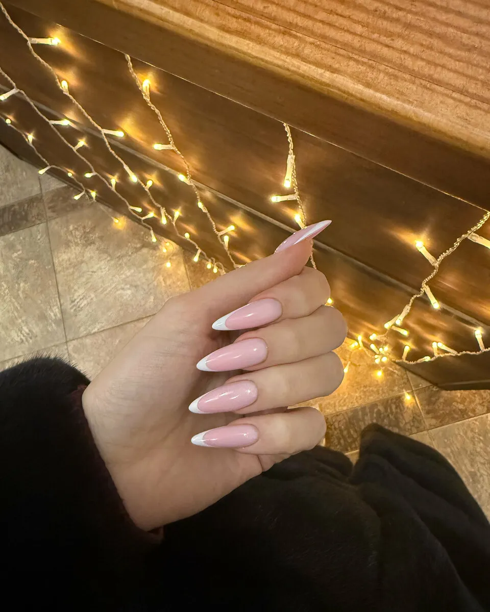
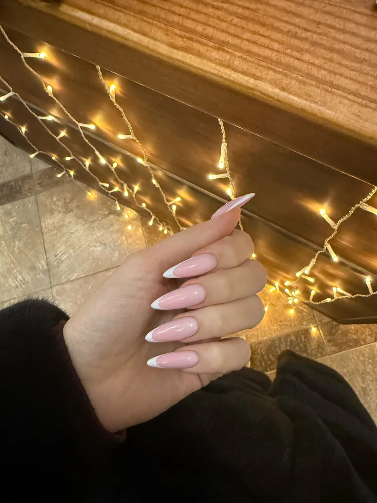
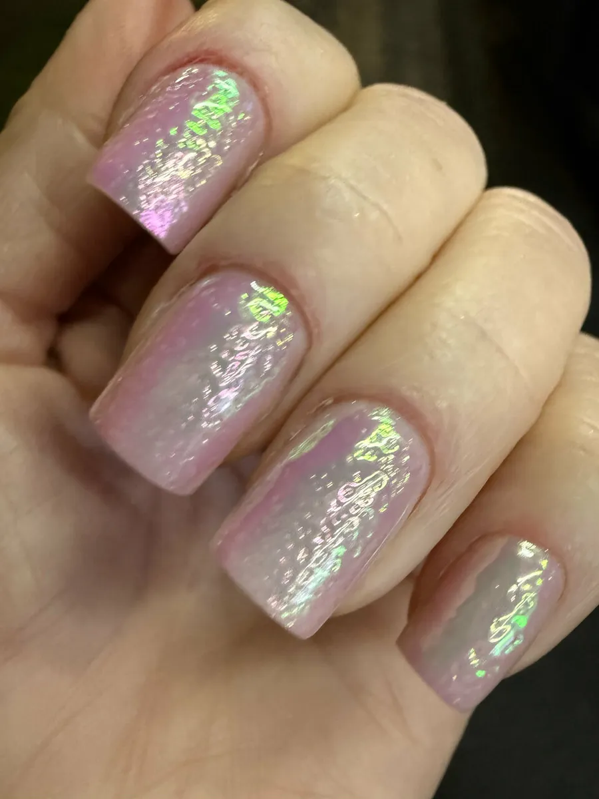
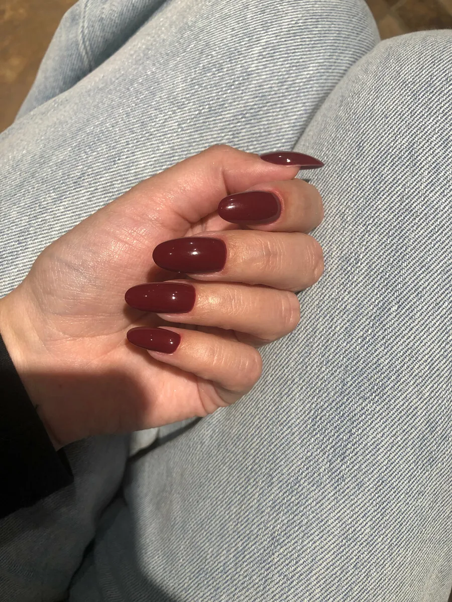
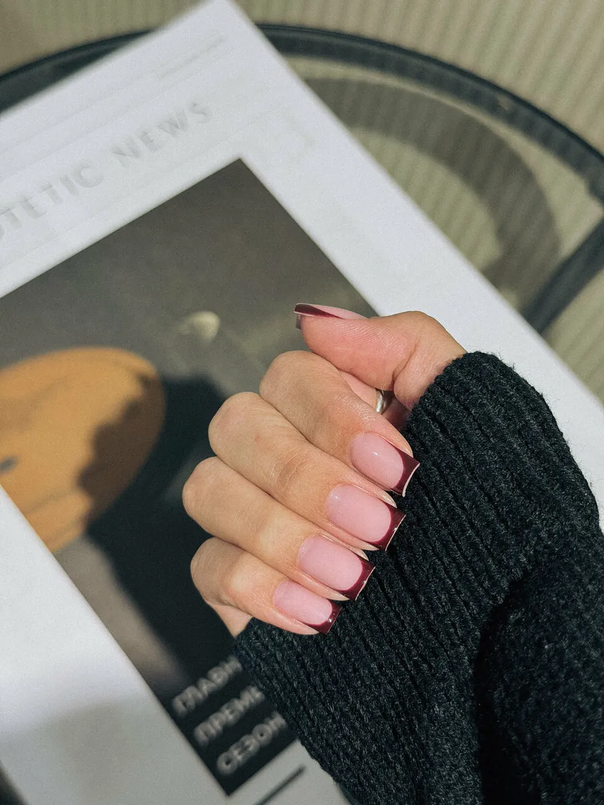
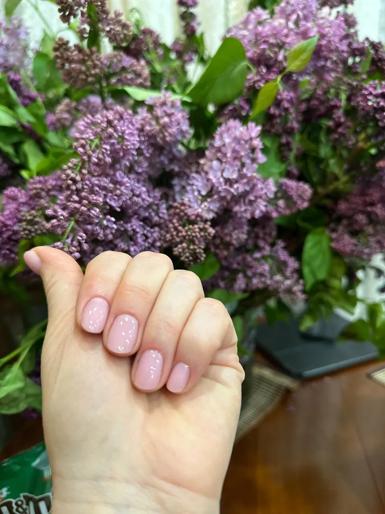
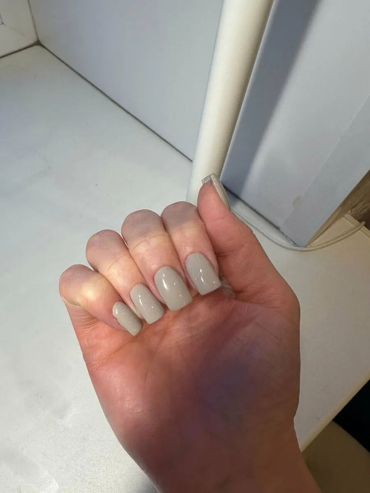
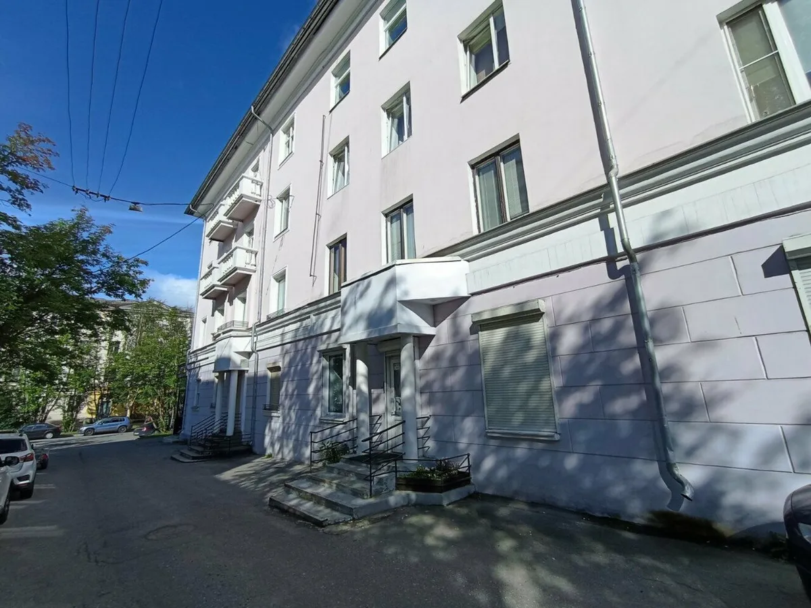
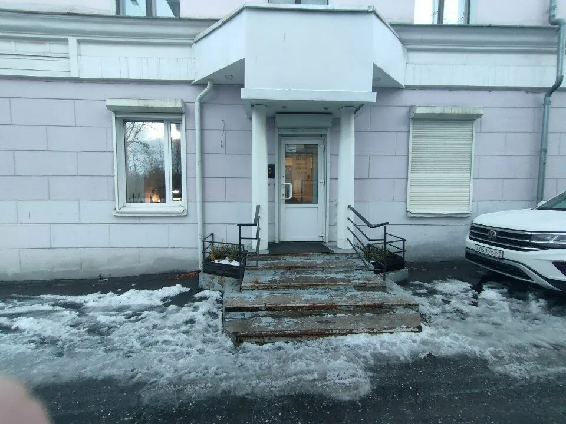

Привели мои ногти в порядок после нескольких неудачных походов к другим мастерам! Сделали очень красивую архитектуру, тонко, изящно, профессионально! Спасибо девочкам и создательнице этого прекрасного места Виктории!
Alexandra Tsss, 21 марта 2024
Френч, архитектура ногтей и однотонное покрытие, педикюр, подолог и брови. Каждый день с 10 до 20, запись во ВКонтакте или по телефону.

Привели мои ногти в порядок после нескольких неудачных походов к другим мастерам! Alexandra Tsss, отзыв на Яндекс Картах
Выберите цвет и форму - они попадут в сообщение для записи. Точный оттенок подберут в студии по палитре.
Оттенок: НюдФорма: овал
Фото с карточки студии на Яндекс Картах. Нажмите на фото, чтобы рассмотреть.






Здесь будут ваши цены.
Названия услуг - из отзывов на Яндекс Картах.
Выбираете услугу, день и время на этой странице - текст скопируется, остаётся вставить его в сообщения группы. Или звоните +7 (909) 559-90-00.
"Островок тишины и спокойствия в нашем сумасшедшем мире", - пишет Ирина Шушкова.
"Мастер Анастасия мастерски рисует френч аккуратно и красиво", - Поля Климова. И "очень красивую архитектуру, тонко, изящно", - Alexandra Tsss.
"Хожу уже год к ним ногти аж полтора месяца держатся", - пишет Марина Рыбакова.


"Прекрасное, уютное место. Прекрасные мастера. Комфортно", - пишет Ирина Шушкова. Маникюр, педикюр, подолог и брови - в одной студии.
Привели мои ногти в порядок после нескольких неудачных походов к другим мастерам! Сделали очень красивую архитектуру, тонко, изящно, профессионально! Спасибо девочкам и создательнице этого прекрасного места Виктории!
Alexandra Tsss, 21 марта 2024
Отличный салон, маникюр всегда шикарный, мастер Анастасия мастерски рисует френч аккуратно и красиво! Люблю всем сердцем!
Поля Климова, 26 октября 2026
Прекрасное, уютное место. Прекрасные мастера. Комфортно. Всегда уходишь в отличном настроении. У меня есть любимый мастер - Вера Кривозуб. Этот салон - островок тишины и спокойствия в нашем сумасшедшем мире.
Ирина Шушкова, 17 сентября 2025
Не могу не оставить отзыв такому чудесному мастеру маникюра Виктории и ее команде! Всегда работа и сервис на высшем уровне! Желаю процветания салону
Наталья Дегтярева, 26 октября 2026
Отзывы перенесены дословно, без правок.
Выберите услугу, день и время на этой странице и нажмите "Написать во ВКонтакте" - текст скопируется, останется вставить его в сообщения группы. Или позвоните: +7 (909) 559-90-00.
Каждый день с 10:00 до 20:00.
Да. В отзыве пишут, что подолог Юлия Ронжина извлекла вросший ноготь и дала советы по уходу - а ребёнок "даже не пикнул".
Да, педикюр и коррекцию бровей - об этом пишут в отзывах на Яндекс Картах.
В отзыве пишут: "ногти аж полтора месяца держатся".
Мурманск, Пушкинская ул., 5. Каждый день с 10:00 до 20:00.
Выберите услугу, день и время и нажмите "Написать во ВКонтакте" - текст скопируется, останется вставить его в сообщения группы. Или позвоните.